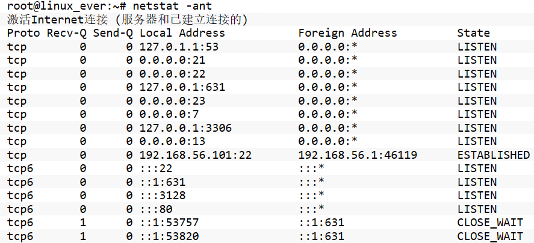
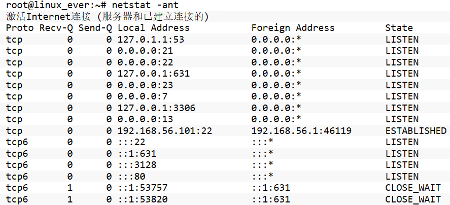
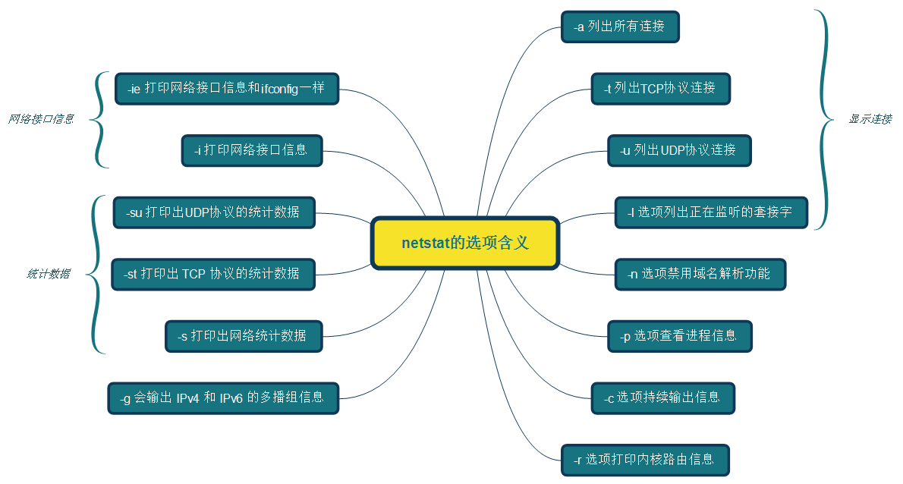

明明
白白
咋啦？垂头丧气的。
明明
问君能有几多愁，恰似一江春水向东流。要用到netstat了，一点也不会。愁啊愁...
白白
嗐，别怕，我来教你！掌握一些选项含义，慢慢就没问题啦。
明明
呜呜谢谢你安慰我，请开始吧！
白白
Netstat是控制台命令,是一个监控TCP/IP网络的非常有用的工具，它可以显示路由表、实际的网络连接以及每一个网络接口设备的状态信息。Netstat用于显示与IP、TCP、UDP和ICMP协议相关的统计数据，一般用于检验本机各端口的网络连接情况。在 CentOS 7 操作系统中，此命令默认是未安装的，所以我们可以使用如下命令进行网络工具包的安装。
yum install -y net-tools
刚开始，可以查看帮助文档，使用命令...（话音未落）
明明
netstat --help（即答）
白白
...就可以查看各个参数的含义
明明
嘻嘻
白白
下面介绍几个常用的选项：-a，–all：显示所有 socket 连接，默认显示已连接的。
-t，–tcp：仅显示 TCP 相关。
-u，–udp：仅显示 UDP 相关。
-p，–programs：显示建立 socket 连接的进程 ID 和程序名。
-n，–numeric：不解析别名，能显示数字的全部转为数字，例如 IP 和 Port。
-l，–listening：仅显示在监听（Listening）的 socket 服务。
-r，–toute：显示路由表。
-e，–extend：显示更多扩展信息。
-s，–statistics：按各个协议展示网络统计信息。
-c，–continuous：继续监听，即每隔一段时间执行一次 netstat 命令。
下面讲亿个栗子嗷！
明明
好！
白白
1.列出所有的连接netstat -a
-a选项会列出tcp，udp和unix协议下所有套接字的连接。但是我们一般只是想查找某个协议或某个端口的具体连接情况。
2.只列出TCP或UDP协议的连接
用-t选项列出TCP协议的连接
用-t选项列出TCP协议的连接
用-u选项列出UDP协议的连接
明明
简简单单吖
白白
本来也不难
3. 禁用反向域名解析，加快查询速度
默认情况下 netstat 会通过反向域名解析技术查找每个 IP 地址对应的主机名。这会降低查找速度。如果你觉得 IP 地址已经足够，而没有必要知道主机名，就使用 -n 选项禁用域名解析功能。  tcp 0 0 192.168.56.101:22 192.168.56.1:46119 ESTABLISHED 是用ssh协议登录到主机的，所以可以看到这是建立的一条tcp连接。
默认情况下 netstat 会通过反向域名解析技术查找每个 IP 地址对应的主机名。这会降低查找速度。如果你觉得 IP 地址已经足够，而没有必要知道主机名，就使用 -n 选项禁用域名解析功能。  tcp 0 0 192.168.56.101:22 192.168.56.1:46119 ESTABLISHED 是用ssh协议登录到主机的，所以可以看到这是建立的一条tcp连接。
4. 只列出监听中的连接
任何网络服务的后台进程都会打开一个端口，用于监听接入的请求。这些正在监听的套接字也和连接的套接字一样，也能被 netstat 列出来。使用 -l 选项列出正在监听的套接字。 现在我们可以看到处于监听状态的 TCP 端口和连接。如果你查看所有监听端口，去掉 -t 选项。如果你只想查看 UDP 端口，使用 -u 选项，代替 -t 选项。
任何网络服务的后台进程都会打开一个端口，用于监听接入的请求。这些正在监听的套接字也和连接的套接字一样，也能被 netstat 列出来。使用 -l 选项列出正在监听的套接字。 现在我们可以看到处于监听状态的 TCP 端口和连接。如果你查看所有监听端口，去掉 -t 选项。如果你只想查看 UDP 端口，使用 -u 选项，代替 -t 选项。
5. 获取进程名、进程号以及用户ID
查看端口和连接的信息时，能查看到它们对应的进程名和进程号对系统管理员来说是非常有帮助的。举个例子，Apache 的 httpd 服务开启80端口，如果你要查看 http 服务是否已经启动，或者 http 服务是由 apache 还是 nginx 启动的，这时候你可以看看进程名。
使用 -p 选项查看进程信息。 使用 -p 选项时，netstat 必须运行在 root 权限之下，不然它就不能得到运行在 root 权限下的进程名，而很多服务包括 http 和 ftp 都运行在 root 权限之下。
查看端口和连接的信息时，能查看到它们对应的进程名和进程号对系统管理员来说是非常有帮助的。举个例子，Apache 的 httpd 服务开启80端口，如果你要查看 http 服务是否已经启动，或者 http 服务是由 apache 还是 nginx 启动的，这时候你可以看看进程名。
使用 -p 选项查看进程信息。 使用 -p 选项时，netstat 必须运行在 root 权限之下，不然它就不能得到运行在 root 权限下的进程名，而很多服务包括 http 和 ftp 都运行在 root 权限之下。
明明
等一下，讲太快脑子没转过来
我要问你问题！怎么同时查看进程名和用户名啊
白白
简单！使用 -ep 选项就可以同时查看进程名和用户名。
好了休息一分钟

6. 打印统计数据
netstat 可以打印出网络统计数据，包括某个协议下的收发包数量。选项是-s
下面列出所有网络包的统计情况： 如果想只打印出 TCP 或 UDP 协议的统计数据，只要加上对应的选项（-t 和 -u）即可。
netstat 可以打印出网络统计数据，包括某个协议下的收发包数量。选项是-s
下面列出所有网络包的统计情况： 如果想只打印出 TCP 或 UDP 协议的统计数据，只要加上对应的选项（-t 和 -u）即可。
7. 显示内核路由信息
使用 -r 选项打印内核路由信息。打印出来的信息与 route 命令输出的信息一样。我们也可以使用 -n 选项禁止域名解析。
使用 -r 选项打印内核路由信息。打印出来的信息与 route 命令输出的信息一样。我们也可以使用 -n 选项禁止域名解析。
8. 打印网络接口
netstat 也能打印网络接口信息，-i 选项就是为这个功能而生。
netstat 也能打印网络接口信息，-i 选项就是为这个功能而生。
明明
仔细看了下，命令并不那么难，有空去练练嘻嘻白白
这就对咯
继续
9. netstat 持续输出
我们可以使用 netstat 的 -c 选项持续输出信息。
比如 netstat -ct 这个命令可持续输出 TCP 协议信息。会持续输出下面的内容。
9. netstat 持续输出
我们可以使用 netstat 的 -c 选项持续输出信息。
比如 netstat -ct 这个命令可持续输出 TCP 协议信息。会持续输出下面的内容。
10. 显示多播组信息
选项 -g 会输出 IPv4 和 IPv6 的多播组信息。
选项 -g 会输出 IPv4 和 IPv6 的多播组信息。
11、打印 active 状态的连接
active 状态的套接字连接用 "ESTABLISHED" 字段表示，所以我们可以使用 grep 命令获得 active 状态的连接：
active 状态的套接字连接用 "ESTABLISHED" 字段表示，所以我们可以使用 grep 命令获得 active 状态的连接：
12、查看服务是否在运行
如果你想看看 http,smtp 或 ntp 服务是否在运行，使用 grep。
如果你想看看 http,smtp 或 ntp 服务是否在运行，使用 grep。
好啦，基本上就到这里了，多多练习吧。等等，拿上这个图片，一目了然。

明明
哇，太棒咯，谢谢！